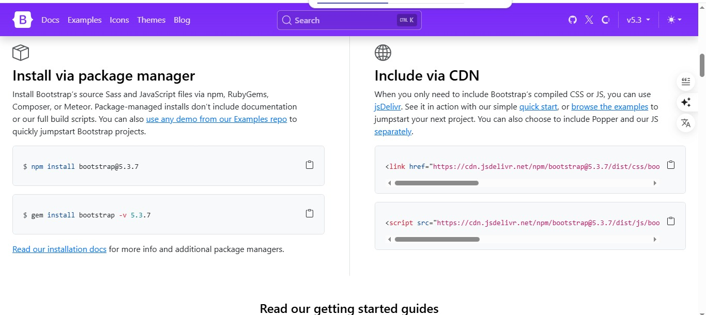
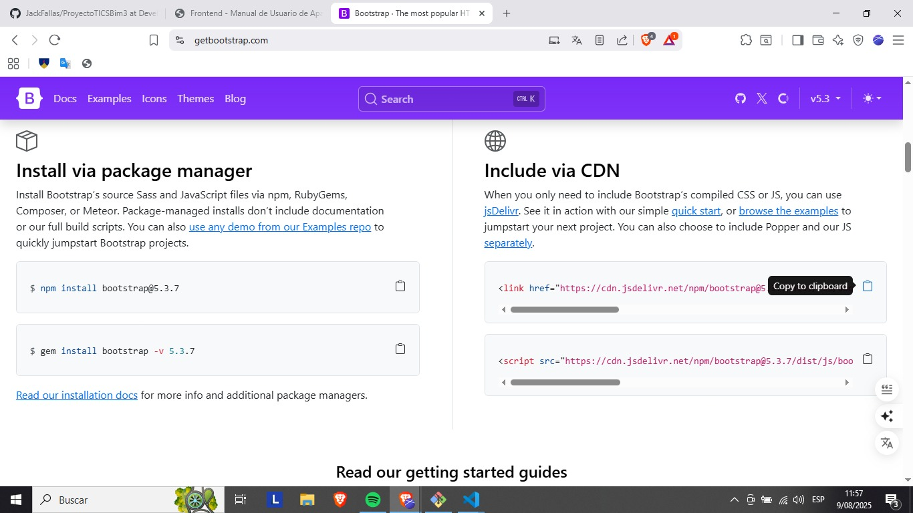

Frontend: HTML, CSS, Bootstrap, JSP y JSF
La capa de frontend de una aplicación Maven basada en Java EE se encarga de la presentación y la interacción con el usuario. Aquí exploraremos las tecnologías clave que la componen.
Estructura del proyecto: la carpeta webapp
En un proyecto Maven de tipo web, todo el contenido estático y dinámico del frontend reside en la carpeta src/main/webapp. Esta es la raíz de tu aplicación web y aquí es donde se organizan los archivos HTML, CSS, JavaScript y las páginas JSP.
mi-proyecto/
├── src/
│ └── main/
│ ├── java/
│ ├── resources/
│ └── webapp/
│ ├── index.jsp
│ ├── style/
│ │ └── style.css
│ └── WEB-INF/
│ └── web.xml
└── pom.xml
Esta estructura garantiza que el servidor de aplicaciones pueda encontrar y servir correctamente todos los recursos del frontend.
HTML y CSS con Bootstrap
HTML (HyperText Markup Language) es el lenguaje estándar para crear páginas web, definiendo su estructura y contenido. CSS (Cascading Style Sheets) se utiliza para estilizar esas páginas, controlando la apariencia visual como colores, fuentes y diseño.
Bootstrap es un framework de código abierto de HTML, CSS y JavaScript que facilita el desarrollo de interfaces web responsivas y atractivas. A continuación, te mostramos cómo incluirlo en tu proyecto utilizando la CDN (Content Delivery Network).
Paso 1: Ir a la página oficial de Bootstrap
Para obtener los enlaces de la CDN, visita la página oficial de Bootstrap. En la sección "Include via CDN", encontrarás los enlaces de CSS y JavaScript que necesitas.

Imagen 1: Sección de la página de Bootstrap con los enlaces CDN.Paso 2: Copiar los enlaces
Haz clic en el ícono de "copiar" al lado de cada enlace (el del CSS y el del JavaScript) para copiarlos a tu portapapeles. Es importante copiar ambos para que Bootstrap funcione correctamente.

Imagen 2: Icono para copiar los enlaces CDN.Paso 3: Pegar los enlaces en tu archivo HTML
Finalmente, pega los enlaces en la sección head de tu archivo HTML. El enlace del CSS link debe ir antes del enlace de JavaScript script.
 Imagen 3: Enlaces de Bootstrap pegados en el archivo HTML.
Imagen 3: Enlaces de Bootstrap pegados en el archivo HTML.
<!-- Ejemplo básico de un botón Bootstrap -->
<button type="button" class="btn btn-primary">Mi Botón</button>JSP (JavaServer Pages)
JSP es una tecnología de Java que permite incrustar código Java directamente en documentos HTML (o XML). Un servidor de aplicaciones procesa las JSP para generar contenido dinámico antes de enviar la página al navegador del cliente. Es ideal para crear vistas dinámicas y reutilizables.
<%-- Ejemplo de JSP para mostrar la fecha actual --%>
<p>La fecha actual es: <%= new java.util.Date() %></p>
Ejemplo práctico: Un formulario con JSP
Aquí te mostramos cómo crear un formulario simple en una página JSP que envía datos a un Servlet (el backend). El Servlet procesaría los datos y redirigiría a otra página JSP que podría mostrar un mensaje de confirmación o error.
<!-- Formulario en una página JSP (por ejemplo, contacto.jsp) -->
<div class="container mt-5">
<h2>Formulario de Contacto</h2>
<form action="miServletDeContacto" method="POST">
<div class="mb-3">
<label for="nombre" class="form-label">Nombre:</label>
<input type="text" class="form-control" id="nombre" name="nombre" required>
</div>
<div class="mb-3">
<label for="email" class="form-label">Email:</label>
<input type="email" class="form-control" id="email" name="email" required>
</div>
<button type="submit" class="btn btn-primary">Enviar</button>
</form>
</div>
JSF (JavaServer Faces)
JSF es un framework de interfaz de usuario para aplicaciones web Java. A diferencia de JSP, que es más una plantilla, JSF se centra en un modelo de componentes, lo que facilita la construcción de interfaces de usuario complejas y la gestión del estado de la aplicación. JSF maneja automáticamente el ciclo de vida de las peticiones HTTP, la validación y la conversión de datos, reduciendo la cantidad de código "boilerplate".
<!-- Ejemplo de un componente de entrada de texto en JSF (Facelets) -->
<h:form>
<h:outputText value="Tu nombre:" />
<h:inputText value="#{miBean.nombre}" />
<h:commandButton value="Enviar" action="#{miBean.saludar}" />
</h:form>
La combinación de estas tecnologías te permite crear interfaces de usuario ricas y dinámicas, aprovechando la potencia del ecosistema Java.